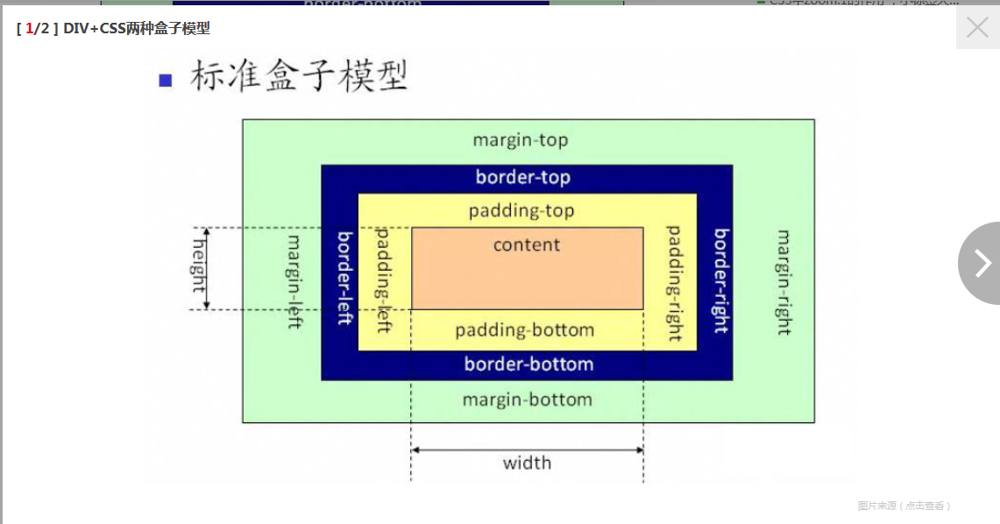

111
这个盒模型,如果用标准w3c盒子模型解释那么这个盒子需要占据的位置为：
宽：100+20*2+10*2+50*2=260px 高：80+20*2+10*2+50*2=240px
盒子的实际大小为：
宽：100+20*2+10*2=160px 高：80+20*2+10*2=140px
这个盒模型，如果用IE盒子模型解释那么这个盒子需要占据的位置为：
宽：100+50*2=200px 高：80+50*2=180px
盒子的实际大小为：
宽：100px 高：80px
css3的box-sizing属性给了开发者选择盒模型解析方式的权利。
W3C的盒模型方式被称为“content-box”，IE的被称为“border-box”

从上图可以看出，w3c盒子模型的范围包括margin、border、padding、content,
并且content部分不包含其他部分。

从上图可以看出，IE盒子模型的范围包括margin、border、padding、content,
和w3c盒子模型不同的是，IE盒子模型的content部分包含了padding和border.
IE5.5及更早的版本使用的是IE盒模型。IE6及其以上的版本在标准兼容模式
（standards compliant mode）下使用的是W3C的盒模型标准。我们说这是一个好消息因为这
意味着此盒模型问题只会出现在IE5.5及其更早的版本中。只要为文档设置一个DOCTYPE，就会
使得IE遵循标准兼容模式的方式工作。
W3C的盒模型方式被称为“content-box”，IE的被称为“border-box”，使用box-sizing: border-box;就是为了在设置有padding值和border值的时候不把宽度撑开。